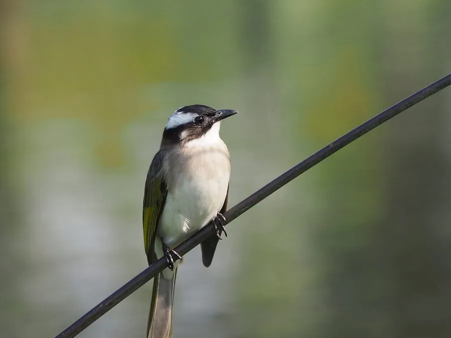

鸟类 · 动物界
白头鹎 Pycnonotus sinensis

头顶黑色、枕部有一块白色羽斑的小型鸣禽，背羽橄榄绿，腹部灰白。鸣声多变，是城市公园和乡村灌丛最常见的鸟类之一。
- 分类
- 门脊索动物门纲鸟纲目雀形目科鹎科属鹎属
- 栖息环境
- 低山灌丛、林缘、公园、果园、农田、村庄与城市绿地，偏好有浆果植物的环境。
- 地理分布
- 中国东部、中部、南部及台湾，越南北部；为中国特有繁殖鸟，北方种群有短距离迁徙。
- 保护级别
- IUCN 红色名录列为无危（LC）；中国列入“三有”陆生野生动物名录。
物种志
白头鹎体长约十七至二十二厘米，体重二十五至四十克。头顶至后颈黑色，枕部有一块明显的白色羽斑，形似白发，故名“白头翁”；眼后至颊部有白色羽纹，背羽橄榄绿色，翼羽和尾羽暗褐并具橄榄绿羽缘，下体灰白，尾下覆羽淡黄。喙黑色，虹膜深褐，脚黑色。雌雄羽色相似，幼鸟头部白色羽斑不明显。
它栖息于低山灌丛、林缘、公园、果园、农田与城市绿地，常成小群活动，性活泼，取食果实、嫩叶、花蜜和昆虫，尤其喜欢浆果。繁殖期在树上或灌丛中筑碗状巢，每窝产卵三至五枚，一年可繁殖两窝。鸣声清亮多变，常被形容为“滴哩滴哩—啾啾”，清晨最为频繁。白头鹎为中国特有繁殖鸟，分布于中国东部、中部和南部及越南北部，适应城市环境，种群稳定，列入“三有”名录。
形态与习性
- 体长17–22 厘米
- 体重25–40 克
- 食性果实、嫩叶、花蜜与昆虫
- 繁殖树上碗状巢，每窝 3–5 枚
- 特征枕部白色羽斑形似白发
- 保护级别IUCN 无危；“三有”动物
趣味知识
- 枕部白斑像一撮白发，“白头翁”之名由此而来。
- 一年可繁殖两窝，城市公园里数量增长明显。
- 清晨鸣声清亮多变，是南方城市最熟悉的鸟叫之一。
生态关系
- 传播 → 樱桃 鸟类取食果实并传播种子